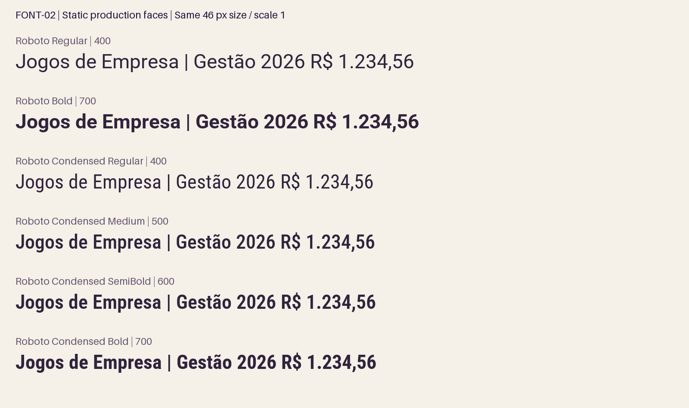

Seis TTF estáticos verificados. Unity 6000.3.20f1: PASS, zero erros/avisos, GUIDs preservados na reimportação. Cena suja e 1052 textos preservados.
Fontes oficiais Google Fonts fixadas por commit; licenças OFL 1.1 e créditos mantidos. Nenhum asset TMP ou cena de produção alterado.

| Face | Peso | Versão | SHA-256 |
|---|---|---|---|
| Roboto Regular | 400 | Version 3.015; 2026 | 1e8de96a0019f63ea1ee9a305bcf4a844da87265e50c643fc446f9c82a035e80 |
| Roboto Bold | 700 | Version 3.015; 2026 | 062ce42ce7cf71167b3629461b1d3c37960121b1d171abc8db9150ccdc87cc29 |
| Roboto Condensed Regular | 400 | Version 3.008; 2023 | 0b3f5be2bbb5c8f6b45abb6a7da8f912bc383f2d88a98f18ebcfc963244fdb50 |
| Roboto Condensed Medium | 500 | Version 3.008; 2023 | fe637f40ab77922ce2e4fab38ca1948d265cd64e1a600e4d7d404d1a58a8a2da |
| Roboto Condensed SemiBold | 600 | Version 3.008; 2023 | 88c3c0e800121d6ac40413389ce6325cbb2471ec49af055df8a4374e6eea5ed5 |
| Roboto Condensed Bold | 700 | Version 3.008; 2023 | 5c051f9d03dacdf28f0f645d460cffaf6bfacf607330782d6d73f74db01e27a3 |
Cobertura: 117/118 caracteres atuais; U+2190 ausente. Corpus ampliado: 342/536. Lacunas completas no manifesto; FONT-03 define fallback explícito.
QA · Manifesto · Importação Unity · Verificação binária · Preservação · Metas